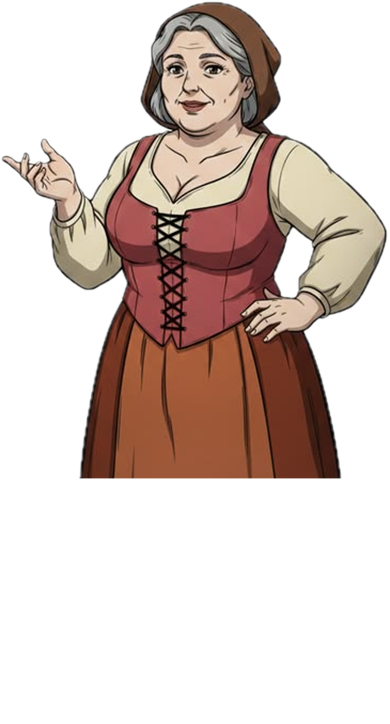

You
The tavern doors creak shut behind you. Inside, a low fire burns. You step forward, scanning the heavy oak table where four locals sit watching you. "Excuse me... are you Eric? Tim's cousin?"
Press [ Enter ] or Click Box to continue